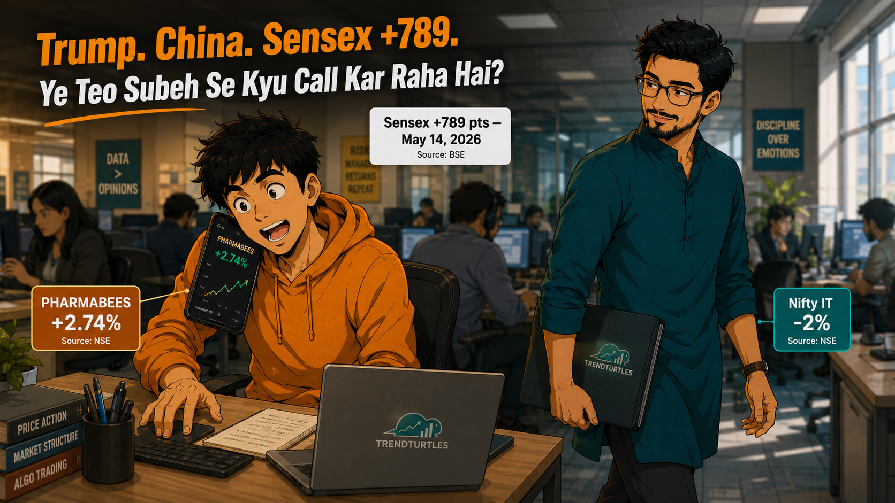

Trump-Xi Beijing summit ne Sensex +789 diya. Teo sahi stocks mein tha — phir bhi galti karne wala tha. Post-event entry ka sach, data ke saath.

For the first time in months, he felt like he knew something. And that feeling was about to cost him.
Seat 14-B. Thursday. 2:47 PM.
The office had that specific Thursday-afternoon quiet — keyboards, AC hum, someone's Teams call bleeding through a thin partition. Teo had not looked at his work screen in fourteen minutes.
He was looking at his Zerodha app. Green numbers. Nippon PharmaBees — up 2.74% on the day. His holding, bought eleven days ago on a half-informed hunch, was showing the kind of return he usually only heard about from other people.
Sensex : +789 points. Trump was in Beijing. Xi had received him at the Great Hall of the People. Nvidia's Jensen Huang was on the same plane. The market had understood what was happening before most people had finished reading the headline.
Teo understood one thing clearly: he had been right. And he needed more money to be more right.
"Yaar ek kaam tha—" — Teo to Rahul, his college friend, phone half under the desk, voice dropped to a whisper, one eye tracking his manager through the glass cabin.
"Bhai kya hua? Sab theek?" — Rahul to Teo, slightly alarmed — Teo only called in office hours when something had either gone very right or very wrong.
"Sab theek se zyada theek hai. Sun — woh PHARMABEES maine liya tha na, yaad hai? Aaj dekh kitna upar hai. Main aur lena chahta hun. 40-50k ho sakte hain tere paas?" — Teo to Rahul, leaning forward now, swagger creeping into the whisper.
A pause on the line. Then:
"Bhai mujhe bhi bata — main bhi lunga. Abhi loon kya?" — Rahul to Teo, already reaching for his own phone.
Three rows away, Neo walked past with a folder. He clocked the phone. The posture. The expression on Teo's face — that particular brightness that comes from being right about something and wanting to double it. One second. That half-smile. And he kept walking.
"Neo — ruk." — Teo to Neo, standing slightly, phone still to his ear.
"Rahul baad mein," — Teo to Rahul, hanging up mid-sentence. He'd seen Neo's face. That smile was not a congratulations.
On May 13, 2026, US President Donald Trump landed in Beijing for a two-day summit with President Xi Jinping — the first American presidential visit to China since Trump's own first term in 2017. He did not travel light. Elon Musk, Nvidia CEO Jensen Huang, Apple's Tim Cook, Boeing's Kelly Ortberg — America's technology industry sat on that plane.
For the past year, the US and China had been fighting a trade war. America had slapped heavy taxes on Chinese goods. China hit back. Both sides were losing. Jensen Huang of Nvidia — the world's biggest AI chip company — was personally on Trump's plane to Beijing. That one detail told the market everything.
On May 10 — four days before the summit — the two countries announced a truce. US taxes on Chinese goods dropped from 145% to 30%. That Sunday afternoon, while most people were watching IPL, the market had already started moving.
Pharma stocks went up. Metal stocks went up. IT stocks went down. Same Indian market. Same week. Three completely different stories — and most retail investors only found out on Thursday when the Sensex printed +789.
By May 14, Sensex had printed +789 points on summit optimism. Nifty Pharma was +2.74%. Metal was +2%. IT was -2% for a second straight session. Same index. Same day. Three completely different stories.
Teo had held PHARMABEES. He had been right. The question was what he was going to do next.
Teo put his phone face-up on the table before Neo had even sat down. Screen showing the PHARMABEES gain.
"Dekh. Maine liya tha. Tune nahi bataya tha, maine khud socha tha. Aur dekh kitna hua." — Teo to Neo, leaning back, arms crossed, the specific satisfaction of a man who has been vindicated.
Neo looked at the screen. Looked at Teo.
"Sahi tha." — Neo to Teo, simply.
"Toh main aur leta hun. Abhi bhi upar jaayega na? Trump-Xi summit abhi khatam bhi nahi hua—"
"Tu sahi tha. Ab galti mat kar." — Neo to Teo. Quiet. Flat. The tone of someone who has seen this exact movie before.
Teo uncrossed his arms.
"Galti? Market abhi bhi—"
"Pharma +2.74% hua kal kyunki log May 10 ko, jab truce announce hua, tab position le rahe the. Woh log kal ka green number dekh ke nahi bethe the." — Neo to Teo, one observation, then a question: "Tu kab socha tha lega — kal, ya May 10 ko?"
Teo opened his mouth. Closed it.
His phone buzzed. Rahul, texting: "Bhai bata — abhi loon? 50k ready hai mera."
"Rahul bhi lena chahta hai," — Teo to Neo, holding up the phone.
"Rahul ne May 10 ko kya kiya tha?" — Neo to Teo, eyebrow up. One question. The answer was obvious.
The US-China tariff truce was publicly announced on May 10 — a Sunday. US duties dropped from 145% to 30%. It was in every newspaper, every market app. NSE sectoral data on May 12 and 13 was already showing Nifty Pharma and Nifty Metal moving before the summit began.
By May 14, when the Sensex printed +789 and the news channels finally went wall-to-wall with Trump-Xi footage, the traders who benefited had already been positioned for four days.
The signal wasn't hidden. It was on NSE India , updated every session, three sectoral indices telling three completely different stories in the same market, on the same day.
"Data dekh, news nahi." — Neo to Teo, standing, picking up his tray. "Rahul ko bhi bata dena."
Teo looked at the green number on his screen for a long moment. Then he put the phone face-down.
He typed one message to Rahul: "Ruk. Baat karte hain shaam ko."
Did you make this exact mistake this week? Or were you the Rahul — ready to move after someone else already had? Head to our LinkedIn (https://www.linkedin.com/company/trendturtles/posts/?feedView=all) or YouTube (https://www.youtube.com) post this week and drop your take in the comments.
Mistake 1 — Right Stock, Wrong Timing
Think of it like a train. The announcement came on May 10. People started boarding on May 11, 12, 13. You arrived at the platform on May 14 — excited, ticket in hand — and saw the train already pulling away. You jumped on anyway.
Nifty Pharma had already moved +1.9% between May 10 and May 13, before the summit even began. By the time the +2.74% number appeared on every news channel on May 14, that was the last carriage of a train that had left four days earlier. The entry window had already closed.
Buying after the event is not a trade. It is paying someone else's profits.
Mistake 2 — One Right Call Does Not Make You an Expert
Teo had been right. One correct call in eight months. And that warm, certain feeling of having called something correctly almost led him straight into a much more expensive mistake.
The correct response to a right call is not to double it at peak excitement. It is to ask one simple question: the reason this worked — is that reason still there? The tariff truce was why PHARMABEES moved. By May 14, that reason was already in every price, every analyst note, every news segment. The edge was gone. Teo just couldn't see it because he was happy.
One win creates the feeling of an edge. It is not the edge itself.
Mistake 3 — The Rahul Problem: Second-Hand FOMO
Rahul had not read anything. No news, no data. He received a phone call from an excited friend on Thursday afternoon and had fifty thousand rupees ready within minutes.
This is the most delayed, most expensive version of the same mistake. Teo at least had a reason — he had been right. Rahul had a friend who had been right. By the time Rahul's money enters any pharma position at May 14 prices, the people who bought on May 10 are deciding whether to sell. Rahul's entry is their exit.
In markets, there is an informal rule: when your friend calls you in office hours, excited, telling you to buy something right now — that is not an entry signal. It is someone else's exit signal.
Teo found Rahul on a video call at 6:45 PM, still watching Nifty Pharma charts.
"Bhai abhi bhi upar hai, loon kya?" — Rahul to Teo, finger hovering.
"Tune May 10 ko dekha tha kya — jab US-China truce announce hua tha?"
"Nahi, Sunday tha, main—"
"Woh log jinhone tab liya, woh aaj bech sakte hain. Tu aaj khareedega — unhe bechne ka mauka dega." — Teo to Rahul, quiet. Slightly surprised at how clearly he could now see it.
A long pause.
"Toh kab loon?"
"Jab data bol raha ho, news nahi. Agle event ka signal dhundh. Is event ki kahani khatam ho gayi." — Teo to Rahul. Neo's words, in Teo's mouth.
Everyone has had a Rahul moment — when a friend called and you almost jumped in. Head to our Linkedin or YouTube this week and drop your version in the comments.
IF: A major agreement is formally announced — trade deal, ceasefire, significant policy change. The news is positive. But the market is still flat or slightly down 1–2 days later. People are still scared. They do not yet trust the news.
THEN: This is the window. Pharma and HealthCare ETF historically move quietly in these moments, before the broad market catches up. PHARMABEES (Nippon India Pharma ETF) and HEALTHCARE (Mirae Asset Healthcare ETF) are available on NSE, on any broker app. Do not deploy everything at once — spread it across 2–3 sessions.
SOURCE: NSE website — nseindia.com — free, daily sectoral data. Compare Nifty Pharma and Nifty IT. Takes two minutes.
AVOID: Do not enter on the day the Sensex prints +500 or +789 and everyone is celebrating. That window is already closed. Wait for the next signal.
IF: A large American technology company — Nvidia, Apple, AMD — is officially cleared to do business in China. Nifty IT has already been falling for 2–3 sessions.
THEN: Do not buy IT stocks simply because they look cheap. This news means China's own technology market is reopening — which weakens India's 'China alternative' story in the near term. Look at metal and infrastructure ETFs instead — Nippon India Nifty Metal ETF (NSE: METAL). China's AI expansion means energy and infrastructure demand, which benefits Indian metal exporters.
SOURCE: Business Standard or Economic Times markets section — free online. Compare Nifty IT vs Nifty Metal on any broker app, 5-day view.
AVOID: Do not buy IT stocks after a China deal simply because they have fallen. 'It looks cheap' is a feeling, not a reason.
IF: A stock or ETF you bought is doing well. You want to add more, or tell friends about it. Your only reason is: 'it worked.'
THEN: Stop. Ask yourself one question: the reason you bought it in the first place — is that reason still there? If yes, and you can back it with data — then consider adding gradually. If the reason is just 'it is going up' or 'a friend told me' — hold what you have. Consider partial profit booking if you are already up 15–20%.
SOURCE: Your own notes. Every time you buy something, write one line explaining why. That line is your only real source.
AVOID: Do not add to a position purely on the excitement of being right once. And do not call friends to borrow money for a market entry. Ever.
The Trump-Xi summit is done. A fall meeting is planned. The tariff truce is extended. Nvidia H200 chips are cleared for Alibaba, Tencent, ByteDance. The shape of a new US-China technology relationship is forming — slowly, conditionally, but forming.
The next signal is already somewhere — in a sectoral index, in an order book, in a policy document that nobody has fully read yet. It will not announce itself on a news channel. It will show up in the data first.
Teo got one right. That is a start. Getting it right twice means reading the next signal before it becomes a headline.
"Data dekh, news nahi."
Know someone who called their friends to pool money after the market had already moved +789 points? Tag them or send this across.